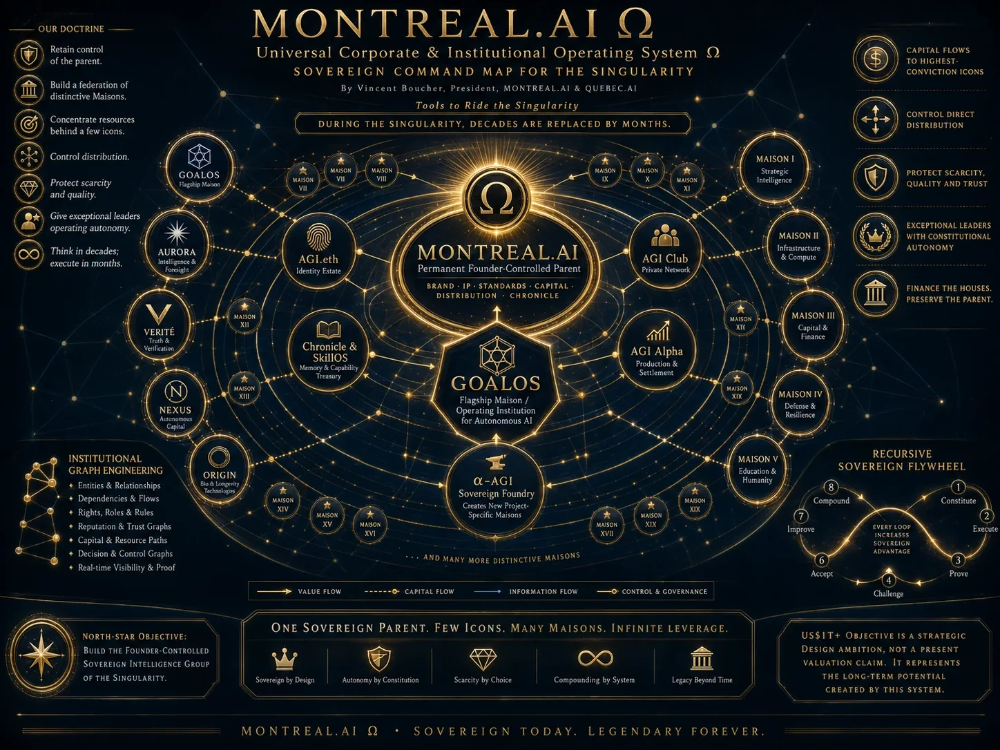

Nœud
TravailExécute une fonction spécialisée et attribuable.
Principe
Fondée à Montréal · 2003 · Contrôle fondateur
Une constitution. Plusieurs systèmes opératoires.
Chaque système sert une fonction distincte — découverte, conversation, ingénierie de graphes, contrôle, navigation, lancement mondial, intelligence juridictionnelle ou commercialisation — tout en obéissant à la même séparation entre sortie, preuve, acceptation et mémoire.
Le système sert la mission. La constitution gouverne le système.
Catalogue institutionnel
Les systèmes peuvent être invoqués séparément ou composés par une mission. Aucun ne peut contourner l’autorité, les preuves, l’acceptation ou Chronicle.
Découverte autonome d’objectifs conséquents.
Ouvrir →◫02Porte d’entrée vérifiée pour chaque entreprise.
Ouvrir →⌘03Graphes de travail, preuve, autorité, mémoire et capital.
Ouvrir →⌂04Plan de contrôle et de gouvernance récurrent.
Ouvrir →✧05Navigation stratégique et scénarios sous accélération.
Ouvrir →◎06Lancer n’importe quoi, n’importe où, avec preuve.
Ouvrir →⟟07Architecture juridictionnelle, financière et fiscale.
Ouvrir →$08Institution commerciale autonome gouvernée par la preuve.
Ouvrir →▤09Mémoire privée, preuve publique et capacité réutilisable.
Ouvrir →◇10Dette de preuve, AGI Jobs, ProofBundles et dossiers.
Ouvrir →♜11Validation mondiale avant paiement, confiance ou réutilisation.
Ouvrir →∞12Amélioration sur tâches fraîches sous contraintes égales.
Ouvrir →Loi de composition
Un système n’est intégré que lorsque la relation entre objectif, autorité, dépendance, éléments de preuve, risque, acceptation et mémoire est déclarée.
Exécute une fonction spécialisée et attribuable.
PrincipeDéclare la dépendance, le transfert, l’autorité ou la preuve.
PrincipeMet les résultats à l’épreuve dans un contexte frais.
PrincipeDécide ce qui peut survivre, se propager ou être révoqué.
PrincipeLe graphe doit être le plus petit capable de satisfaire l’objectif, l’autorité, le niveau de preuve et les critères d’acceptation.